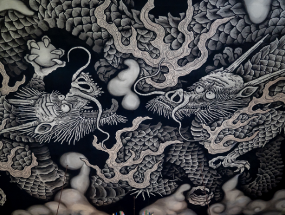
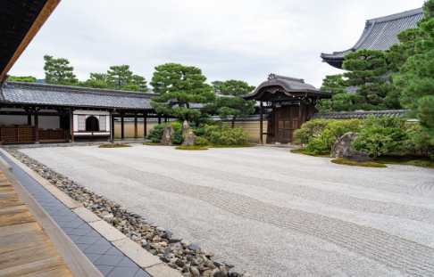
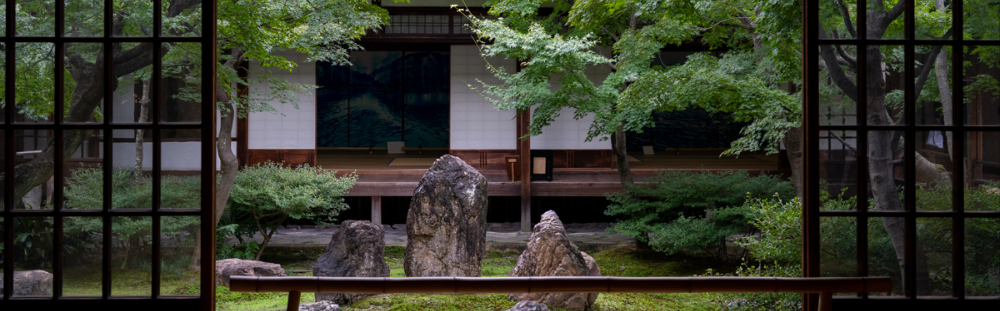

「方丈」
心を映す庭園が
感性を豊かに「建仁寺」
Kenninji Temple
美術館のような
京都最古の禅寺
「風神雷神図」
建仁寺は、1202年に建立された京都最古の禅寺で、現存している建物は江戸時代に再建されたものです。
かつて住職の住居であった方丈に隣接する庫裡の玄関が、現在、拝観の入り口となっています。ここは現代の言葉で言うなれば勝手口であり、当時、台所として使用されていたため、天井が非常に高い吹き抜けになっているのがひとつの見どころとなっています。
また、片隅に置かれた足の速い神様として知られる「韋駄天」像が、多くの客人を迎え入れ、食事が素早く提供されるようにと見守っていたと伝えられています。
そして、建仁寺と言えば、数々の芸術品が展示されていることで有名です。中でも、よく知られている国宝「風神雷神図屏風」は、江戸時代に活躍した絵師の俵屋宗達の作品であると推定されています。宗達の生涯は謎が多く、風神雷神図もまた、宗達の秘められた思いが見る人の想像力をかき立てます。
飛び舞う龍が
寺を守る

「双龍図」
日本では、龍は水を支配し、寺院を火災から守ると信仰されており、建仁寺では龍が描かれた2つの作品を見ることができます。
「礼の間」にある「雲龍図襖」は、桃山時代に活躍した海北友松（かいほうゆうしょう）の作品です。絵師でありながら武士でもあった友松が描いた龍からは、気性の荒さや勢いを感じます。
また、「拈華堂」と呼ばれる法堂の天井には、2匹の龍が描かれた「双龍図」があります。正面に向かって右の龍から目を逸らさずに出口へ向かって歩いていくと、不思議にも龍の顔が自分の方を向いてくるように見え、迫力がありながらも見守られているような感覚を覚えます。
神秘的な強さを持った建仁寺の龍の姿は、ひと目見る価値があるのではないでしょうか。
3つの庭園に
込められた思い

「大雄苑」
昭和初期に作られた「大雄苑」には、自然災害から建仁寺を守るため、縁起の良い数字として「７・５・３」個の石が正面に向かって並べられています。これら15個の石の配置と敷き詰められた白石によって、正面に向かって左から右にまるで水が流れているかのような様子を表現しています。これは、そこに水の流れを感じ、自分の人生の流れと照らし合わせてみてほしいという意図があります。
建仁寺にはこの他にも、火・水・地を表した「○△□乃庭」と360度どこからでも眺められる「潮音庭」があり、「潮音庭」では、自分が1番美しいと思う場所を正面にして眺めてほしいという思いが込められています。
芸術から禅思想を伝承
「潮音庭」
建仁寺が所蔵している作品の中には、歴史的価値が高いため、現物は別の場所で保管されているものがあります。それらの代わりに、こだわりある技法や材料によって忠実に再現された複製が展示されており、より多くの人が作品に触れ、末長く同じ状態で見ることができます。
また、建仁寺はこれらの芸術品を通じて、禅の教えを伝えていくことを使命としています。訪れる人が芸術品や庭園を通じて美しいものに触れることで、心を清め、豊かにする、また、心のよりどころとなる場所として在り続けることが建仁寺の願いです。
建仁寺
営業時間：10:00〜17:00
〒605-0811
京都市東山区大和大路通四条下る小松町584
最寄り駅：京阪電鉄「祇園四条」下車 徒歩7分、阪急電車「河原町」下車 徒歩10分
最寄りのバス停：市バス「東山安井」下車 徒歩5分 、「南座前」下車 徒歩7分、「祇園」下車
徒歩10分、「清水道」下車 徒歩10分
入場料：一般500円 中高生300円 小学生200円